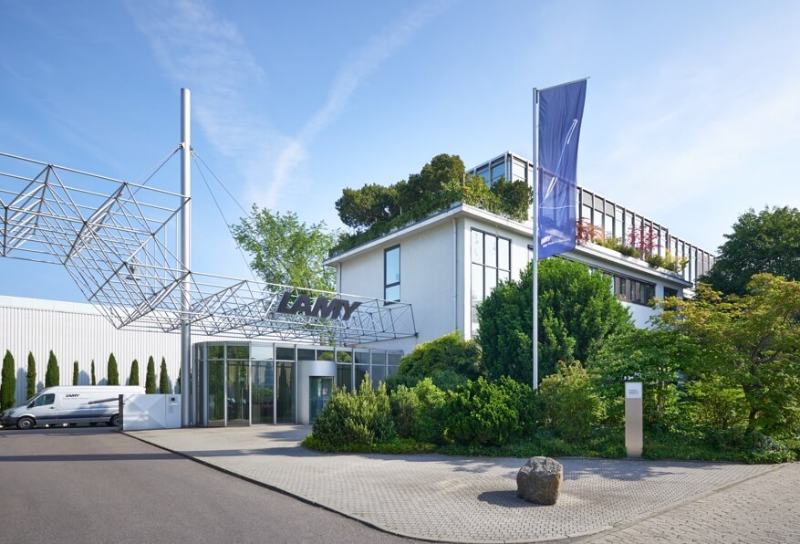

Over Ons
Wij bij Lamy focussen ons op de ideale schrijfervaring. Met tientallen jaren ervaring en gepassioneerde mensen in ons team weten wij dat al onze producten aan al uw wensen zullen voldoen. Door de jaren heen zijn onze eisen voor kwaliteit alleen maar strenger geworden. Onze motto: "Not just a pen"
Waarom Lamy? Lamy is een van de grootste penproducenten op de planeet. Met hun Duitse kwaliteit en uitgebreide range van productprijzen hebben ze wat voor iedereen. Zelf ben ik fan van de Safari lijn omdat ze vele leuke kleuren hebben en goed zijn ontworpen.